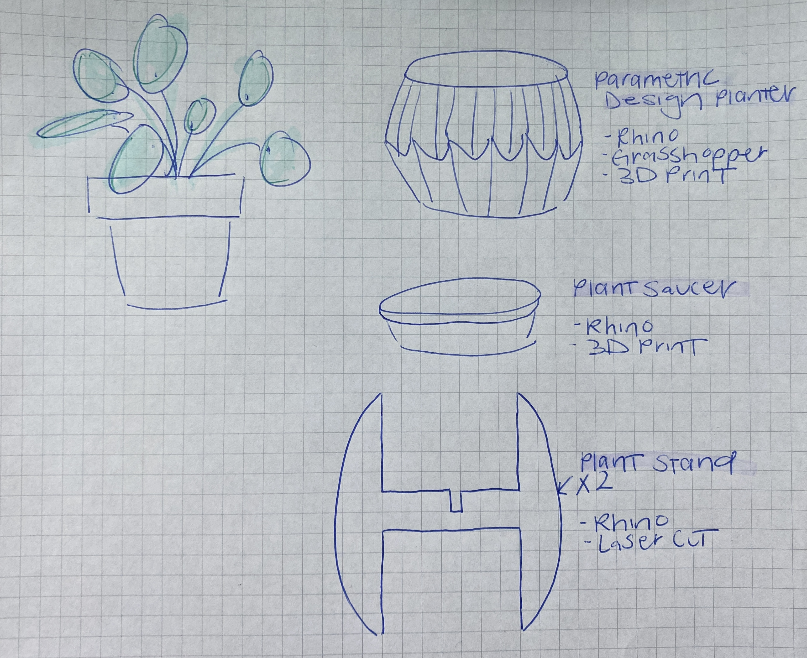

A7: Final Project Proposal!
Nov. 22, 2022
Concept
With the holidays creeping up and having potential travel plans in between, I decided to go for a simplier yet practical project. For my final project, I want to create a planter and plant stand for my Pilea plant that I recently got.
It's been a mission trying to find the perfect plant pot for my plants as I am a bit picky with what I want (drainage, white, simple yet unique, etc.). I have been able to find plant pots for most of my plants, but my Pilea is the only one that is still in need of one. As I have acquired many digital fabrication skills this quarter, I thought it's the perfect time to create my own plant pot and stand!

Breakdown of Tasks / Techniques Used
- Incorporating / designing around stock part
- 3D Modeling in Rhino
- Grasshopper for parametric planter design
- Laser cutting the plant stand
- 3D printing planter + saucer
Here's a moodboard of planters and plant stands for inspiration.

Timeline
- 11/20-11/22: Buy material + 3D model in Rhino (prioritize plant stand for laser cutting)
- 11/22: Proposal
- 11/23: Laser cut at the 8
- 11/24-11/27: Continue 3D modeling in Rhino (planter + plant saucer) + 3D test print
- 11/28-12/1: Wiggle room for iteration / can start 3D printing
- 12/2: 3D printing
- 12/3: Assembly
- 12/4: Documentation
- 12/6: Presentation
Contingency Plan
- Can switch to another material if there's an issue with the birch hardwood.
- If the laser cutter is down, I will resort to 3D printing the plant stand.
Bill of Materials
- Birch Hardwood: $11 from Lowe's
- Sandpaper (need to purchase)
- Filament (already have)
- Plant (already have + waiting for a home)
Return to Main